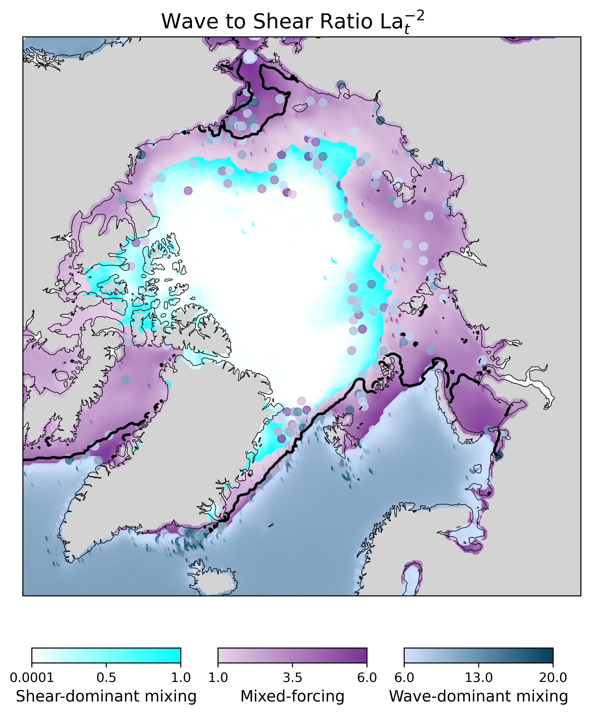

Expeditions & Fieldwork
Summary of MOSAiC participation and other campaigns...
I am a Postdoctoral Research Associate at Brown University, with a background in physical and satellite oceanography and a specialization in radar remote sensing. My research focuses on the interactions between sea ice, waves, and the upper ocean, particularly in the marginal ice zone (MIZ), where fragmented, drifting ice meets open water...
As a co-investigator on a NASA-ROSES funded project, I study how ocean waves in the MIZ affect passive microwave sea ice concentration (SIC) retrievals in Antarctica. The goal of this project is to correct persistent biases in datasets widely used for climate model initialization and validation, such as the NSIDC Climate Data Record. For my contribution I am developing a framework that leverages multi-sensor satellite data (Sentinel-1, Sentinel-2, and ICESat-2) to detect wave-influenced sea ice conditions and quantify their impact on SIC over- and underestimations.
I participate as an Early Adopter of the NASA-ISRO SAR (NISAR) mission. I plan to combine L-band NISAR data with C-band Sentinel-1 to improve SIC retrievals in the Antarctic MIZ during the melt season, building on my earlier work showing the benefits of integrating both frequencies in this seasonal regime.
I work with coupled simulations using the NeXtSIM sea ice model and WaveWatch III wave model to assess wave-driven mixing and Langmuir turbulence in the Arctic Ocean. This modeling framework generates physically consistent wave-related parameters (Stokes drift, wave energy, and wind stress fields) under evolving sea ice conditions. Leveraging these outputs, we are conducting the first Arctic-wide assessment of Langmuir turbulence potential under realistic wave–ice interaction regimes. Upper ocean turbulence is essential to sea ice variability but such processes are often simplified or not included in Earth system models.
Summary of MOSAiC participation and other campaigns...
Email: aikaterini_tavri@brown.edu